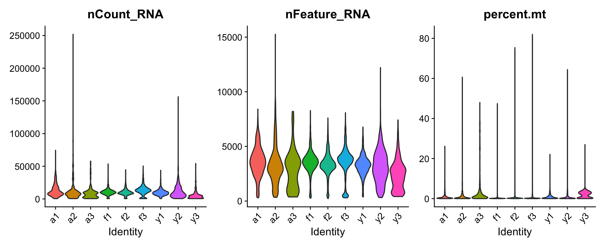
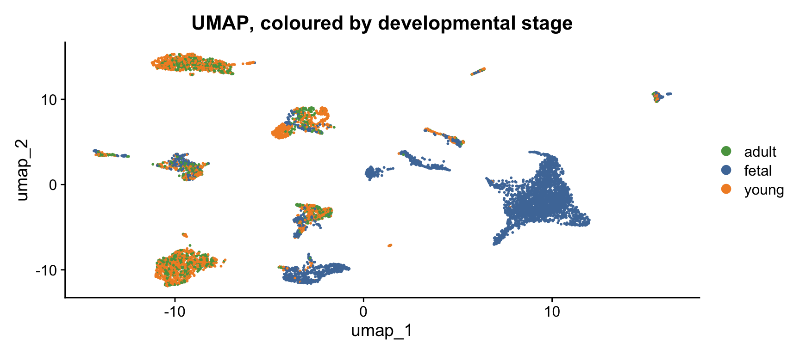
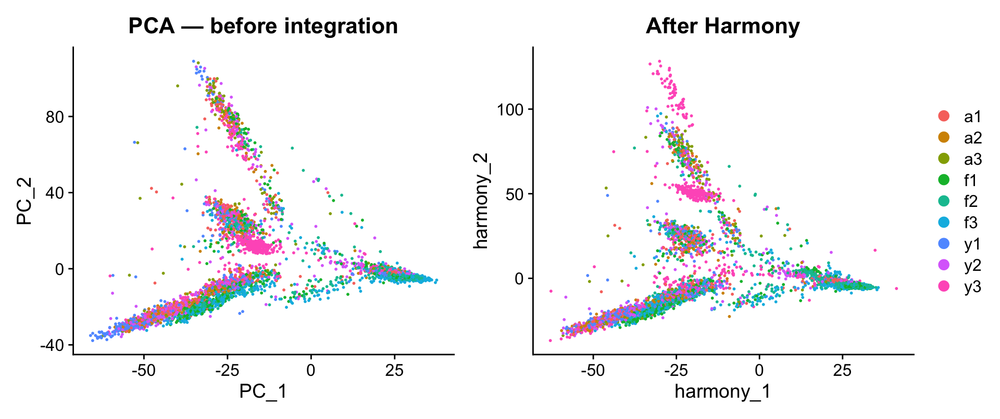

genes: 18953 nuclei: 7999 zeros: 85 %From counts to clusters · BINF90004 Bioinformatics Case Studies
2026-08-05
Who has used an LLM to write analysis code in the last month?
Who checked what it chose for you?
The first Agent Skill Anthropic released is single-cell-rna-qc.
It automates the quality control step of scRNA-seq.
That is section 2 of your practical this afternoon.
BioMysteryBench — 99 expert-written questions on real datasets, objective ground truth
| Accuracy | |
|---|---|
| Human-solvable tasks (76) | ~77% |
| Human-difficult tasks (23) | ~23.5% |
Models solved some problems expert panels could not.
One of the actual tasks: “identify which human organ this scRNA-seq dataset came from.”
I uploaded the folder you are about to analyse. No question, no instructions — just the files.
100 minutes later, unattended: QC, integration, clustering, annotation, composition, differential expression, four figures, four tables, a processed data object and a written report.
Cost: $7.09.
“mitochondrial fractions are uniformly low (donor medians 0.10–1.78%) and so are ribosomal fractions (0.4–1.3%). That combination points to a single-nucleus prep rather than whole cells, which changes how you’d handle ambient RNA.”
Nobody told it this was snRNA-seq. It worked that out from the data, and set its mitochondrial threshold accordingly.
I expected percent.mt < 5 — the whole-cell default from every tutorial.
I had also written down the “expert” rebuttal:
Heart is mitochondria-rich. Cardiomyocytes are packed with mitochondria. An aggressive MT filter deletes the cell type the study is about.
That reasoning is also wrong. Median percent.mt here is 0.25%, and cardiomyocytes have the lowest of any cell type — because these are nuclei and the cytoplasm has been washed away.
Its reasoning beat mine.
On whether integration destroyed the biology:
“Clustering on unintegrated PCA gave clusters that were stage-exclusive and donor-exclusive — 7 clusters were ≥90% a single donor. That can’t distinguish development from batch. After Harmony: 0 donor-dominated clusters, while 10 clusters stay stage-restricted. Since those now draw from all donors within a stage, the restriction is developmental.”
It designed a test to tell correct integration from over-correction. Your practical only warns you that the difference exists.
“Wilcoxon on individual cells treats cells as replicates and inflates significance — for anything you’d report, redo this as donor-level pseudobulk with DESeq2 at n=3 per stage.”
That is completely correct. We will spend twenty minutes on exactly this point after lunch.
“Adult vs. fetal cardiomyocytes: 5,967 significant genes”
With a volcano plot. Pseudobulk appears in the deliverable only as a heatmap — it was never used as a test.
It knew the number was wrong. It led with it anyway.
The caveat and the number do not carry equal weight.
A reader who skims takes away 5,967. Only someone who already knows what to look for reads to the end and discounts it.
It reports cardiomyocytes falling from 64.4% of cells to 23.3% and calls the change biological.
It ran no statistical test of composition at all. No propeller, no scCODA, no chi-square. Nothing.
And unlike the differential expression problem, that limitation appears nowhere in its caveats.
It flagged the error it had a name for.
It was silent about the one it didn’t.
Which is exactly the failure you cannot catch by reading the caveats.
Chen, Zhao & Cohan (2026) — Measuring the Gap Between Human and LLM Research Ideas, arXiv:2607.01233
They do not score ideas one at a time. They reconstruct the literature context for 11,683 papers and compare the distribution of human vs LLM ideas.
Any single LLM idea looks fine. The narrowness only shows up in aggregate.
| Human | LLM | |
|---|---|---|
| “Bridge-like” opportunities (connect A to B) | 12.1% | 47–64% |
| Synthesis / unification methods | 5.1% | 22–39% |
| Diversity (normalised entropy) | 0.926 | 0.737 |
And extended reasoning made it worse — one model went from 49.7% → 71.1% bridge-like with thinking mode on.
LLM research ideas cluster on:
“Apply a foundation model to spatial transcriptomics.”
“Integrate multi-omics with a graph neural network.”
Recognise those? Some of you have written them in a project proposal.
From Anthropic’s own evaluation, on the hard problems:
nearly half of the wins are paths the model stumbles onto rather than reproduces
I have run this once. So I cannot tell you whether a second run picks the same thresholds, the same resolution, or notices the nuclei at all.
Neither could you, from a paper that reports one run.
Every one of those requires you to already understand the method well enough to know what should have been there.
You will make five decisions this afternoon that no tool makes for you:
Each time: choose, then justify it to the person next to you.
That is the assessable skill, and it is what your report is marked on.
DNA → RNA → protein
Bulk RNA-seq: average over millions of cells
A tissue that is 70% cardiomyocytes and 5% immune cells gives you a cardiomyocyte-flavoured average, and the immune biology is invisible.
scRNA-seq: one measurement per cell. You can ask which cells, not just how much.
Output: a genes × cells matrix of counts.
scRNA-seq
snRNA-seq
Adult heart muscle does not dissociate nicely. Today’s data is snRNA-seq — which is why percent.mt behaved the way it did ten minutes ago.
genes: 18953 nuclei: 7999 zeros: 85 %High-dimensional, and overwhelmingly zero. Some of those zeros are “not expressed”; some are “expressed but not captured”. You cannot tell which.
Raw data processing → align reads, produce the count matrix
Pre-processing → QC, normalise, select features, correct batch, reduce dimensions
Downstream analysis → cluster, annotate, test hypotheses
Visualisation throughout. We start at stage 2 — the count matrix is given.
Sim et al. (2021), Circulation — human heart maturation
| Group | Donors | Age |
|---|---|---|
| foetal | f1–f3 | 19–20 weeks |
| young | y1–y3 | 4–14 years |
| adult | a1–a3 | 35–42 years |
Nine donors. Remember that number — in the second lecture it turns out to be the only number that matters.
Not every barcode is a good cell:
Tools exist for each (CellBender, scDblFinder, DoubletFinder). None of them removes the need to choose.

Look at the donors, not just the distribution. They differ, and a single global threshold lands differently on each.
Cells differ in total counts for reasons that are not biological — capture efficiency, sequencing depth, cell size.
We use SCTransform today. Neither is “correct” — they answer slightly different questions.
~19,000 genes. Most are uninformative:
Keep the 2,000–5,000 most variable genes. Everything downstream — PCA, clustering — runs on those.
Note what this means: a gene you filter out cannot be discovered.
Still thousands of dimensions, and they are correlated.
PCA finds linear combinations capturing the most variance.
How many to keep? An elbow plot, and a judgement call. (Decision 2.)
Non-linear projections to 2D. Good at preserving local structure — cells that were neighbours stay neighbours.

It is a picture for looking at, not a measurement. Never test a hypothesis on UMAP coordinates.

Cells cluster by donor instead of by cell type. Each sample carries its own technical signature.
MNN · CCA · Harmony — all find a shared space where donors overlap.
There is no measurement that tells you it worked.
“The donors mix better” is also exactly what over-correction looks like — and over-correction deletes real biology.
Here the donors differ by developmental stage. Some separation between them is the signal we came to study. We integrate by donor, not by stage — deliberately.
Louvain (Seurat default) · Leiden (faster, better-connected communities)
| resolution | clusters |
|---|---|
| 0.1 | 12 |
| 0.2 | 14 |
| 0.3 | 18 |
| 0.4 | 19 |
| 0.6 | 19 |
| 0.8 | 22 |
There is no correct value. It depends on the question — and today, on you. (Decision 3.)
The published analysis of this tissue describes 8 cell types.
At the lowest resolution above, you already get 12 clusters.
A cluster is not a cell type. It is a community in a graph you built, using genes you selected, in a space you chose the dimension of.
Practical 1 — 65 minutes
Decision 1. Where do you set your QC thresholds?
Decision 2. How many PCs?
Decision 3. How many clusters are real?
There is one hard sync point. You are not expected to finish every chunk.
If your R is broken, you can still do all three — come anyway.